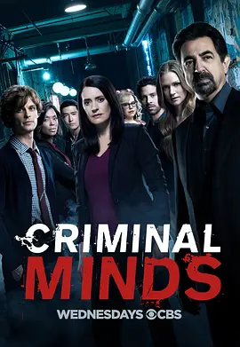

8.7
犯罪心理 第十三季
Criminal Minds Season 13
2017
美国
评分 8.7
导演:
格伦·卡肖 / 戴安娜·瓦伦丁 / 沙拉特·拉朱 / 阿莱克·斯迈特 / 爱莎·泰勒
演员:
乔·曼特纳 / 马修·格雷·古柏勒 / A·J·库克 / 克斯汀·范奈丝 / 爱莎·泰勒 / 亚当·罗德里格兹 / 丹尼尔·亨利
类型:
剧情,悬疑,犯罪
剧情简介
第十三季的故事从一次严重的交通事故开始，BAU 的成员在突如其来的灾难中被迫面对团队的脆弱性。车祸让他们暂时失去关键力量，也让“随时可能失去同伴”的残酷现实再一次摆在众人面前。重整后的队伍在阴影中继续投入案件调查，而每个人都比以往更清楚：任何判断失误，都可能让团队付出代价。本季的案件风格更加多变，有利用城市废弃空间制造陷阱的连环罪犯，也有将犯罪伪装成日常意外的高智商嫌疑人。BAU 在各个州之间奔走，案件现场从雾气沉重的森林到灯光刺眼的高速公路，再到普通家庭的客厅，每个地点都藏着难以察觉的讯号。瑞德在经历前一季的心理折磨后变得更沉静，他在推理嫌犯时的节奏更慢，却更深刻，几句话便能撕开嫌犯的心理屏障。JJ 在本季承担了更多压力，她在对外协调、情绪安抚以及现场判断中都展现出极强的韧性。摩根离队后，Alvez 与 Simmons 的加入为行动线带来新的节奏，他们在缉捕和战术推进中展现出高效默契。而加西亚依旧是心理支点，她坐在屏幕后面，将大量蛛丝马迹串成清晰路径，让团队在混乱中找到方向。贯穿本季的暗线来自一个极其危险的连环犯罪者，他不仅躲在黑暗里观察 BAU 的行动，还刻意制造与他们的“心理对弈”。他的作案方式残忍隐秘，每一次出现都仿佛在挑战团队的极限。随着线索逐渐收紧，BAU 意识到这并不是普通案件，而是一场针对他们本身的长期狩猎。第十三季在案件推进与人物成长之间找到了新的平衡。在黑暗、人性裂缝与突发危机之间，团队用专业与信念维系彼此，让 BAU 在风雨不断的环境中依旧稳稳站立。